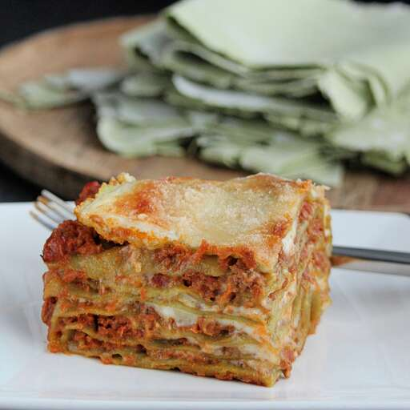

Home
Lasagne
Lasagne

Description
This recipe is adapted from the official lasagne by the Bolognese Chamber of Commerce,
with a few tweaks inspired by locals—adjusting the meat, wine, and whether to add milk.
One non-negotiable: Green lasagne sheets are essential. The ragù is simple, with no garlic,
herbs, or spices. Fresh pasta eliminates the need for pre-boiling.
Ingredients
- 1 (3 ounce) package pancetta, minced
- ½ cup diced carrot
- ½ cup diced celery
- ½ cup diced yellow onion
- 1 tablespoon olive oil
- 7 ounces ground beef
- 6 ounces ground pork
- ½ cup dry red wine
- 2 cups vegetable broth, divided, more as needed
- 1 ½ cups plain tomato sauce
- salt to taste
- 1/2 cup whole milk
Steps
- Start preparing ragù by sautéeing pancetta in a large stockpot over medium-high heat
until fat renders, 1 to 2 minutes. Add carrot, celery, onion, and oil. Cook, stirring
until vegetables have softened, about 5 minutes. Add beef and pork. Cook while mashing
meat into small pieces until browned, 5 to 7 minutes.
- Add wine and bring to a boil. Add 1 cup broth and tomato sauce. Reduce heat to low, and
partially cover the pot to allow steam to escape. Simmer ragù, stirring occasionally,
about 1 hour.
- Add 1 more cup of broth to ragù. Continue simmering, stirring often, until very thick,
1 to 1 1/2 hours. Add more broth only if necessary; ragù should drop, not run, off a spoon.
Set aside.
- Start preparing pasta after ragù is cooked. Bring water and salt to a boil in a small saucepan.
Add spinach, cover, and return to a boil. Cook, stirring gently, until spinach is heated through.
Remove from heat, leave covered, and let cool.
- Drain spinach in a mesh strainer set over a bowl, pressing it down with a fork to squeeze out as
much water as possible; reserve the liquid. Purée spinach in a blender until smooth.